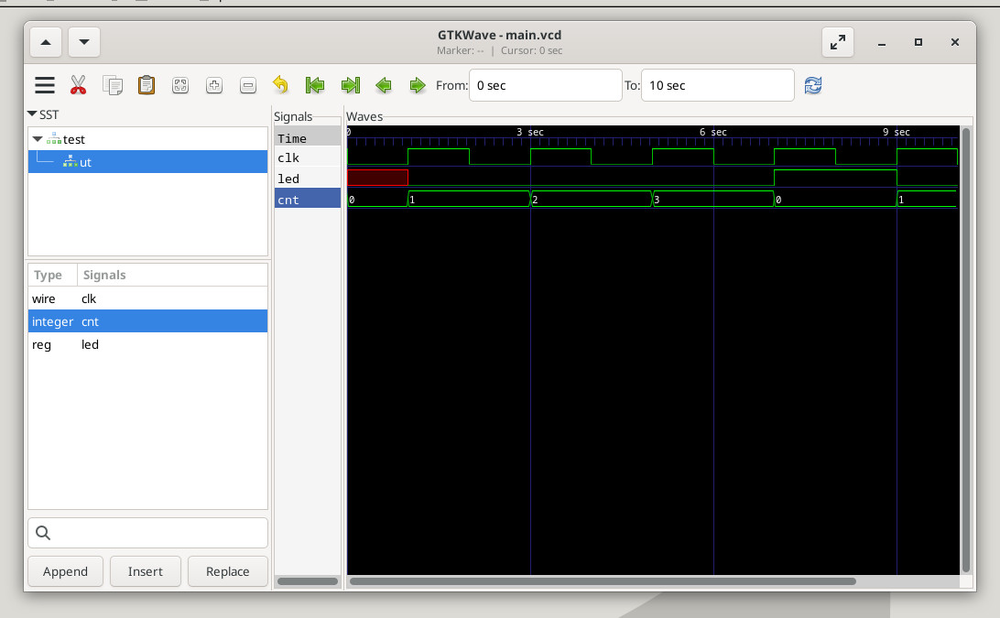

參考資訊：
https://www.chipverify.com/verilog/verilog-4-bit-counter
main.v
module main (
input clk,
output reg led
);
integer cnt = 0;
always @(posedge clk) begin
if (cnt == 0) begin
led <= 0;
end if (cnt == 3) begin
cnt = 0;
led <= !led;
end else
cnt = cnt + 1;
$monitor("%t | clk = %d | cnt = %d | led = %d", $time, clk, cnt, led);
end
endmodule
module test();
reg clk;
wire led;
main ut(.clk(clk), .led(led));
always #1 clk = ~clk;
initial begin
$dumpfile("main.vcd");
$dumpvars(0, test);
clk <= 0;
#10 $finish;
end
endmodule
編譯
$ iverilog main.v -o main
$ vvp main
1 | clk = 1 | cnt = 1 | led = 0
2 | clk = 0 | cnt = 1 | led = 0
3 | clk = 1 | cnt = 2 | led = 0
4 | clk = 0 | cnt = 2 | led = 0
5 | clk = 1 | cnt = 3 | led = 0
6 | clk = 0 | cnt = 3 | led = 0
7 | clk = 1 | cnt = 0 | led = 1
8 | clk = 0 | cnt = 0 | led = 1
9 | clk = 1 | cnt = 1 | led = 0
10 | clk = 0 | cnt = 1 | led = 0
$ gtkwave main.vcd
